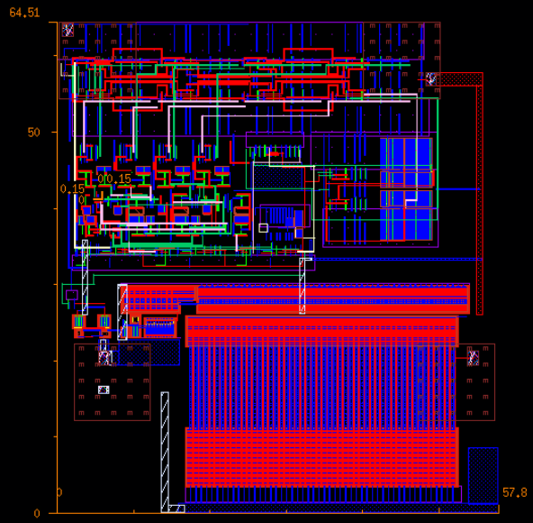

Image Comparator Circuit
Timeline: Apr 2025 – May 2025
Tools: Cadence Virtuoso, HSPICE, Assura, CosmosScope
Developed an image comparator circuit to identify differences in binary-encoded grayscale images. The design used XOR gates and adders for pixel-level comparison on Cadence Virtuoso and was simulated using HSPICE.
- Integrated a Parallel-In Parallel-Out (PIPO) register for efficient data handling and synchronization.
- Included a Parallel-In Serial-Out (PISO) shift register for serialized data output.
- Implemented an on-chip clock divider to synchronize operations at one-fourth the 2.4 GHz clock frequency.
- Performed DRC and LVS checks using Assura; analyzed results with CosmosScope on Linux.
- Debugged and enhanced an off-chip driver to increase output swing from 1.1V to 1.8V, ensuring operation even at 3 GHz with a 12 pF capacitive load.